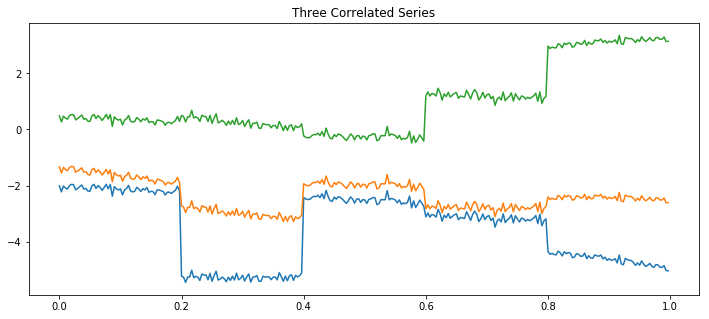
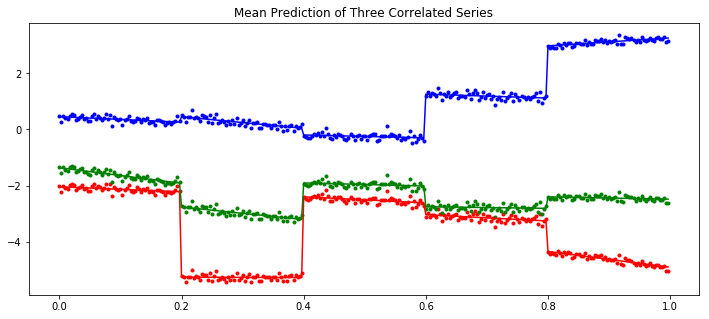

Multivariate Gaussian Random Walk¶
[1]:
import matplotlib.pyplot as plt
import numpy as np
import pymc3 as pm
import theano
from scipy.linalg import cholesky
np.random.seed(42)
%matplotlib inline
Simulate the data:
[2]:
D = 3
N = 300
sections = 5
period = N / sections
Sigma_a = np.random.randn(D, D)
Sigma_a = Sigma_a.T.dot(Sigma_a)
L_a = cholesky(Sigma_a, lower=True)
Sigma_b = np.random.randn(D, D)
Sigma_b = Sigma_b.T.dot(Sigma_b)
L_b = cholesky(Sigma_b, lower=True)
# Gaussian Random walk:
alpha = np.cumsum(L_a.dot(np.random.randn(D, sections)), axis=1).T
beta = np.cumsum(L_b.dot(np.random.randn(D, sections)), axis=1).T
sigma = 0.1
t = np.arange(N)[:, None] / N
alpha = np.repeat(alpha, period, axis=0)
beta = np.repeat(beta, period, axis=0)
y = alpha + beta * t + sigma * np.random.randn(N, 1)
[3]:
plt.figure(figsize=(12, 5))
plt.plot(t, y)
plt.title("Three Correlated Series")
plt.show()

[4]:
class Scaler:
def __init__(self):
mean_ = None
std_ = None
def transform(self, x):
return (x - self.mean_) / self.std_
def fit_transform(self, x):
self.mean_ = x.mean(axis=0)
self.std_ = x.std(axis=0)
return self.transform(x)
def inverse_transform(self, x):
return x * self.std_ + self.mean_
[5]:
def inference(t, y, sections, n_samples=100):
N, D = y.shape
# Standardies y and t
y_scaler = Scaler()
t_scaler = Scaler()
y = y_scaler.fit_transform(y)
t = t_scaler.fit_transform(t)
# Create a section index
t_section = np.repeat(np.arange(sections), N / sections)
# Create theano equivalent
t_t = theano.shared(np.repeat(t, D, axis=1))
y_t = theano.shared(y)
t_section_t = theano.shared(t_section)
with pm.Model() as model:
packed_L_α = pm.LKJCholeskyCov("packed_L_α", n=D, eta=2.0, sd_dist=pm.HalfCauchy.dist(2.5))
L_α = pm.expand_packed_triangular(D, packed_L_α)
packed_L_β = pm.LKJCholeskyCov("packed_L_β", n=D, eta=2.0, sd_dist=pm.HalfCauchy.dist(2.5))
L_β = pm.expand_packed_triangular(D, packed_L_β)
α = pm.MvGaussianRandomWalk("alpha", shape=(sections, D), chol=L_α)
β = pm.MvGaussianRandomWalk("beta", shape=(sections, D), chol=L_β)
alpha_r = α[t_section_t]
beta_r = β[t_section_t]
regression = alpha_r + beta_r * t_t
sd = pm.Uniform("sd", 0, 1)
likelihood = pm.Normal("y", mu=regression, sigma=sd, observed=y_t)
trace = pm.sample(n_samples, cores=4)
return trace, y_scaler, t_scaler, t_section
[6]:
trace, y_scaler, t_scaler, t_section = inference(t, y, sections)
/env/miniconda3/lib/python3.7/site-packages/theano/tensor/subtensor.py:2197: FutureWarning: Using a non-tuple sequence for multidimensional indexing is deprecated; use `arr[tuple(seq)]` instead of `arr[seq]`. In the future this will be interpreted as an array index, `arr[np.array(seq)]`, which will result either in an error or a different result.
rval = inputs[0].__getitem__(inputs[1:])
/env/miniconda3/lib/python3.7/site-packages/theano/tensor/subtensor.py:2339: FutureWarning: Using a non-tuple sequence for multidimensional indexing is deprecated; use `arr[tuple(seq)]` instead of `arr[seq]`. In the future this will be interpreted as an array index, `arr[np.array(seq)]`, which will result either in an error or a different result.
out[0][inputs[2:]] = inputs[1]
Only 100 samples in chain.
Auto-assigning NUTS sampler...
Initializing NUTS using jitter+adapt_diag...
/env/miniconda3/lib/python3.7/site-packages/theano/tensor/basic.py:6611: FutureWarning: Using a non-tuple sequence for multidimensional indexing is deprecated; use `arr[tuple(seq)]` instead of `arr[seq]`. In the future this will be interpreted as an array index, `arr[np.array(seq)]`, which will result either in an error or a different result.
result[diagonal_slice] = x
/env/miniconda3/lib/python3.7/site-packages/theano/tensor/subtensor.py:2339: FutureWarning: Using a non-tuple sequence for multidimensional indexing is deprecated; use `arr[tuple(seq)]` instead of `arr[seq]`. In the future this will be interpreted as an array index, `arr[np.array(seq)]`, which will result either in an error or a different result.
out[0][inputs[2:]] = inputs[1]
/env/miniconda3/lib/python3.7/site-packages/theano/tensor/subtensor.py:2197: FutureWarning: Using a non-tuple sequence for multidimensional indexing is deprecated; use `arr[tuple(seq)]` instead of `arr[seq]`. In the future this will be interpreted as an array index, `arr[np.array(seq)]`, which will result either in an error or a different result.
rval = inputs[0].__getitem__(inputs[1:])
/env/miniconda3/lib/python3.7/site-packages/theano/tensor/basic.py:6611: FutureWarning: Using a non-tuple sequence for multidimensional indexing is deprecated; use `arr[tuple(seq)]` instead of `arr[seq]`. In the future this will be interpreted as an array index, `arr[np.array(seq)]`, which will result either in an error or a different result.
result[diagonal_slice] = x
/env/miniconda3/lib/python3.7/site-packages/theano/tensor/subtensor.py:2339: FutureWarning: Using a non-tuple sequence for multidimensional indexing is deprecated; use `arr[tuple(seq)]` instead of `arr[seq]`. In the future this will be interpreted as an array index, `arr[np.array(seq)]`, which will result either in an error or a different result.
out[0][inputs[2:]] = inputs[1]
/env/miniconda3/lib/python3.7/site-packages/theano/tensor/subtensor.py:2197: FutureWarning: Using a non-tuple sequence for multidimensional indexing is deprecated; use `arr[tuple(seq)]` instead of `arr[seq]`. In the future this will be interpreted as an array index, `arr[np.array(seq)]`, which will result either in an error or a different result.
rval = inputs[0].__getitem__(inputs[1:])
/env/miniconda3/lib/python3.7/site-packages/theano/tensor/subtensor.py:2339: FutureWarning: Using a non-tuple sequence for multidimensional indexing is deprecated; use `arr[tuple(seq)]` instead of `arr[seq]`. In the future this will be interpreted as an array index, `arr[np.array(seq)]`, which will result either in an error or a different result.
out[0][inputs[2:]] = inputs[1]
/env/miniconda3/lib/python3.7/site-packages/theano/tensor/basic.py:6611: FutureWarning: Using a non-tuple sequence for multidimensional indexing is deprecated; use `arr[tuple(seq)]` instead of `arr[seq]`. In the future this will be interpreted as an array index, `arr[np.array(seq)]`, which will result either in an error or a different result.
result[diagonal_slice] = x
/env/miniconda3/lib/python3.7/site-packages/theano/tensor/subtensor.py:2197: FutureWarning: Using a non-tuple sequence for multidimensional indexing is deprecated; use `arr[tuple(seq)]` instead of `arr[seq]`. In the future this will be interpreted as an array index, `arr[np.array(seq)]`, which will result either in an error or a different result.
rval = inputs[0].__getitem__(inputs[1:])
Multiprocess sampling (4 chains in 4 jobs)
NUTS: [sd, beta, alpha, packed_L_β, packed_L_α]
/env/miniconda3/lib/python3.7/site-packages/theano/tensor/subtensor.py:2339: FutureWarning: Using a non-tuple sequence for multidimensional indexing is deprecated; use `arr[tuple(seq)]` instead of `arr[seq]`. In the future this will be interpreted as an array index, `arr[np.array(seq)]`, which will result either in an error or a different result.
out[0][inputs[2:]] = inputs[1]
/env/miniconda3/lib/python3.7/site-packages/theano/tensor/subtensor.py:2339: FutureWarning: Using a non-tuple sequence for multidimensional indexing is deprecated; use `arr[tuple(seq)]` instead of `arr[seq]`. In the future this will be interpreted as an array index, `arr[np.array(seq)]`, which will result either in an error or a different result.
out[0][inputs[2:]] = inputs[1]
/env/miniconda3/lib/python3.7/site-packages/theano/tensor/subtensor.py:2339: FutureWarning: Using a non-tuple sequence for multidimensional indexing is deprecated; use `arr[tuple(seq)]` instead of `arr[seq]`. In the future this will be interpreted as an array index, `arr[np.array(seq)]`, which will result either in an error or a different result.
out[0][inputs[2:]] = inputs[1]
100.00% [4400/4400 01:25<00:00 Sampling 4 chains, 0 divergences]
/env/miniconda3/lib/python3.7/site-packages/theano/tensor/basic.py:6611: FutureWarning: Using a non-tuple sequence for multidimensional indexing is deprecated; use `arr[tuple(seq)]` instead of `arr[seq]`. In the future this will be interpreted as an array index, `arr[np.array(seq)]`, which will result either in an error or a different result.
result[diagonal_slice] = x
/env/miniconda3/lib/python3.7/site-packages/theano/tensor/subtensor.py:2339: FutureWarning: Using a non-tuple sequence for multidimensional indexing is deprecated; use `arr[tuple(seq)]` instead of `arr[seq]`. In the future this will be interpreted as an array index, `arr[np.array(seq)]`, which will result either in an error or a different result.
out[0][inputs[2:]] = inputs[1]
/env/miniconda3/lib/python3.7/site-packages/theano/tensor/basic.py:6611: FutureWarning: Using a non-tuple sequence for multidimensional indexing is deprecated; use `arr[tuple(seq)]` instead of `arr[seq]`. In the future this will be interpreted as an array index, `arr[np.array(seq)]`, which will result either in an error or a different result.
result[diagonal_slice] = x
/env/miniconda3/lib/python3.7/site-packages/theano/tensor/subtensor.py:2197: FutureWarning: Using a non-tuple sequence for multidimensional indexing is deprecated; use `arr[tuple(seq)]` instead of `arr[seq]`. In the future this will be interpreted as an array index, `arr[np.array(seq)]`, which will result either in an error or a different result.
rval = inputs[0].__getitem__(inputs[1:])
/env/miniconda3/lib/python3.7/site-packages/theano/tensor/subtensor.py:2197: FutureWarning: Using a non-tuple sequence for multidimensional indexing is deprecated; use `arr[tuple(seq)]` instead of `arr[seq]`. In the future this will be interpreted as an array index, `arr[np.array(seq)]`, which will result either in an error or a different result.
rval = inputs[0].__getitem__(inputs[1:])
/env/miniconda3/lib/python3.7/site-packages/theano/tensor/basic.py:6611: FutureWarning: Using a non-tuple sequence for multidimensional indexing is deprecated; use `arr[tuple(seq)]` instead of `arr[seq]`. In the future this will be interpreted as an array index, `arr[np.array(seq)]`, which will result either in an error or a different result.
result[diagonal_slice] = x
/env/miniconda3/lib/python3.7/site-packages/theano/tensor/basic.py:6611: FutureWarning: Using a non-tuple sequence for multidimensional indexing is deprecated; use `arr[tuple(seq)]` instead of `arr[seq]`. In the future this will be interpreted as an array index, `arr[np.array(seq)]`, which will result either in an error or a different result.
result[diagonal_slice] = x
/env/miniconda3/lib/python3.7/site-packages/theano/tensor/subtensor.py:2197: FutureWarning: Using a non-tuple sequence for multidimensional indexing is deprecated; use `arr[tuple(seq)]` instead of `arr[seq]`. In the future this will be interpreted as an array index, `arr[np.array(seq)]`, which will result either in an error or a different result.
rval = inputs[0].__getitem__(inputs[1:])
/env/miniconda3/lib/python3.7/site-packages/theano/tensor/subtensor.py:2197: FutureWarning: Using a non-tuple sequence for multidimensional indexing is deprecated; use `arr[tuple(seq)]` instead of `arr[seq]`. In the future this will be interpreted as an array index, `arr[np.array(seq)]`, which will result either in an error or a different result.
rval = inputs[0].__getitem__(inputs[1:])
Sampling 4 chains for 1_000 tune and 100 draw iterations (4_000 + 400 draws total) took 87 seconds.
Predict the mean expected y value.
[7]:
a_mean = trace["alpha"][-1000:].mean(axis=0)
b_mean = trace["beta"][-1000:].mean(axis=0)
y_pred = y_scaler.inverse_transform(a_mean[t_section] + b_mean[t_section] * t_scaler.transform(t))
[8]:
plt.figure(figsize=(12, 5))
plt.gca().set_prop_cycle("color", ["red", "green", "blue"])
plt.plot(t, y, ".")
plt.plot(t, y_pred)
plt.title("Mean Prediction of Three Correlated Series")
plt.show()

[9]:
%load_ext watermark
%watermark -n -u -v -iv -w
theano 1.0.4
numpy 1.18.5
pymc3 3.9.0
last updated: Fri Jun 12 2020
CPython 3.7.7
IPython 7.15.0
watermark 2.0.2